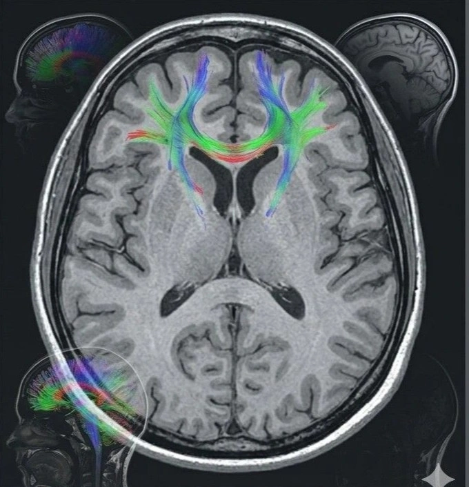
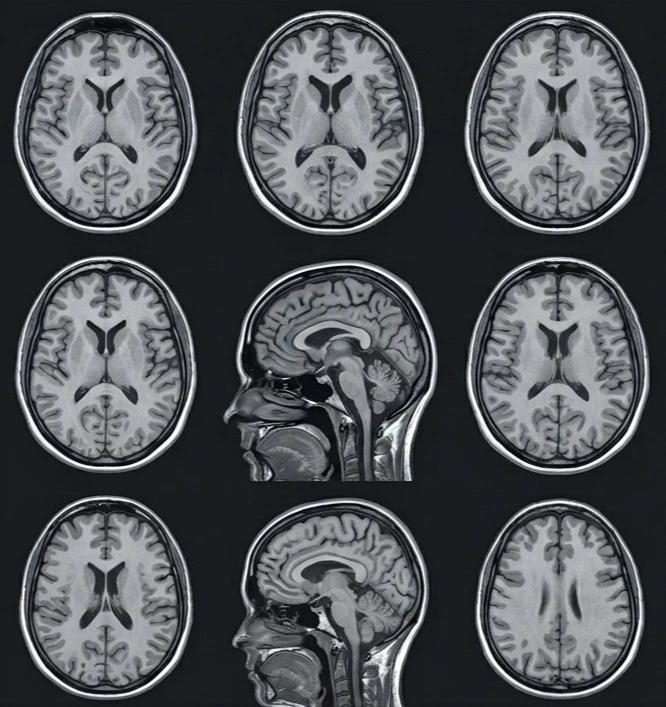

When your doctor recommends an MRI scan, one of the first things you search for is scans near me — a reliable, affordable diagnostic centre that can deliver accurate results without making you travel far or pay more than necessary. Understanding the cost of MRI scan, finding the cheapest MRI scan near me, and knowing what the head MRI scan cost includes can all feel overwhelming — especially when every centre quotes a different MRI test price. At Meera 4D Scans Madurai, one of the most trusted scanning centres near me in Madurai, we believe that quality diagnostic imaging should be accessible, transparent, and affordable for every patient. Book your scan appointment today and get same-day results with honest pricing.
What is an MRI Scan?
MRI — Magnetic Resonance Imaging — is one of the most advanced and detailed diagnostic imaging tools available in modern medicine. Unlike X-rays or CT scans, an MRI uses powerful magnetic fields and radio waves to produce highly detailed images of the body's internal structures. It produces no radiation whatsoever, making it one of the safest imaging technologies available, suitable for patients of all ages including children and pregnant women (with appropriate clinical guidance).
MRI is particularly valuable for imaging soft tissues — the brain, spinal cord, nerves, muscles, tendons, ligaments, and organs — with a level of detail that surpasses CT scans and ultrasound for many conditions. This is why it is the preferred imaging choice for neurological conditions, joint injuries, spinal disorders, tumour assessment, and many other clinical situations. When patients search for scans near me, MRI is increasingly the scan their doctor has recommended — and understanding what it involves helps remove any anxiety about the process.
At Meera 4D Scans Madurai, we are committed to being the most accessible and affordable of all scanning centres near me in Madurai — offering transparent MRI test price, competitive head MRI scan cost, and same-day detailed reports for every patient, every time.
Types of MRI Scans — What Does Your Doctor Need?
The cost of MRI scan varies depending significantly on which part of the body is being imaged and the clinical complexity of the examination. Understanding the different types helps you make sense of the MRI test price you are quoted at different scanning centres near me.
Head & Brain MRI Scan
The brain and head MRI is one of the most commonly requested MRI examinations. The head MRI scan cost covers a comprehensive assessment of the brain, cranial nerves, pituitary gland, sinuses, and surrounding structures. Doctors typically recommend a head MRI for:
- Persistent or severe headaches — to rule out structural causes such as tumours, aneurysms, or increased intracranial pressure
- Stroke or TIA assessment — to identify areas of brain tissue affected by reduced blood flow
- Epilepsy and seizures — to look for structural abnormalities in the brain that may be triggering episodes
- Memory loss or cognitive decline — for early detection of conditions such as dementia or Alzheimer's disease
- Multiple Sclerosis (MS) — white matter lesions in the brain are a key diagnostic feature detected on brain MRI
- Dizziness or balance problems — to assess the inner ear structures and posterior brain
- Head injury follow-up — to assess for contusions, bleeds, or diffuse axonal injury
The head MRI scan cost at Meera 4D Scans Madurai is among the most competitive of all scanning centres near me in Madurai — with no hidden charges and a fully detailed radiologist report provided the same day.
Spine MRI Scan
Spine MRI is the gold standard for diagnosing back and neck problems. The cost of MRI scan for the spine varies depending on whether the cervical (neck), thoracic (mid-back), or lumbar (lower back) region — or a combination — is being assessed. Common reasons include:
- Disc prolapse or herniation — the most common cause of sciatica and radicular leg or arm pain
- Spinal canal stenosis — narrowing of the spinal canal causing nerve compression and leg weakness
- Spondylolisthesis — slipping of one vertebra over another, causing back pain and nerve symptoms
- Spinal cord compression — often urgent, requiring same-day investigation at scanning centres near me
- Chronic back pain — when conservative treatment has failed and a structural cause needs ruling out
Joint & Musculoskeletal MRI
MRI of joints — particularly the knee, shoulder, hip, ankle, and wrist — provides unmatched detail of ligaments, tendons, cartilage, and bone marrow. The MRI test price for joint scans is generally lower than brain or abdominal MRI, making it one of the most cost-effective diagnostic tools for sports injuries, arthritis, and chronic joint pain. Common indications include torn ligaments (ACL, PCL, rotator cuff), meniscal tears, cartilage damage, and stress fractures not visible on X-ray.
Abdominal & Pelvic MRI
Abdominal and pelvic MRI is used when ultrasound or CT has been inconclusive. The cost of MRI scan for the abdomen is higher than joint MRI due to the complexity and scan time involved. It is commonly used for liver disease assessment, pancreatic conditions, kidney tumour characterisation, uterine and ovarian pathology, and rectal cancer staging. When patients search for cheapest MRI scan near me for abdominal conditions, it is important to balance cost with quality — an experienced radiologist and high-field MRI machine make a significant difference to diagnostic accuracy.

Understanding MRI Scan Cost — What You Are Actually Paying For
When comparing the cost of MRI scan across different scanning centres near me, it is important to understand what factors drive the MRI test price — so you can make a truly informed comparison rather than simply choosing the lowest number.
Factors That Affect the MRI Test Price
| Factor | Lower Cost | Higher Cost |
|---|---|---|
| Body part | Single joint (knee, shoulder) | Brain, spine, abdomen, pelvis |
| Contrast dye | MRI without contrast | MRI with contrast (gadolinium) |
| Machine strength | 1.0 Tesla open MRI | 1.5 Tesla or 3 Tesla closed MRI |
| Number of sequences | Standard protocol (3–4 sequences) | Extended protocol (5+ sequences) |
| Report quality | Basic radiologist report | Detailed subspecialty radiologist report |
| Turnaround time | Next day or delayed reporting | Same-day reporting (as at Meera 4D Scans) |
What to Look for When Choosing Scanning Centres Near Me
Finding the cheapest MRI scan near me should not mean compromising on the quality of the scan or the report. Here is what to evaluate when comparing scanning centres near me in Madurai:
- Transparent pricing — the MRI test price should be clearly quoted upfront with no hidden add-on charges for reports, films, or follow-up calls
- Machine quality — a 1.5 Tesla or higher MRI machine produces significantly clearer images than older or lower-field machines, directly affecting diagnostic accuracy
- Radiologist expertise — the scan is only as useful as the report that interprets it. Look for centres with experienced, qualified radiologists providing detailed structured reports
- Same-day results — when your doctor needs to act quickly, waiting 24–48 hours for a report is not ideal. At Meera 4D Scans Madurai, same-day results are standard for most scans near me
- Patient comfort — a wide-bore MRI machine, a calm environment, and a professional team make a significant difference, especially for anxious patients or those with claustrophobia
- Accreditation and certification — choose scanning centres near me with qualified staff and properly maintained, calibrated equipment

Head MRI Scan Cost — What is Included?
The head MRI scan cost is one of the most frequently searched terms by patients in Madurai — and for good reason. Brain and head MRI examinations are among the most clinically important scans a person can have, and understanding what the head MRI scan cost covers helps patients make confident, informed decisions.
What the Head MRI Scan Cost Covers at Meera 4D Scans
- Full brain protocol — multiple MRI sequences covering the entire brain, including T1, T2, FLAIR, and DWI (diffusion-weighted imaging) sequences as clinically indicated
- Cranial nerve assessment — evaluation of relevant cranial nerves based on clinical symptoms
- Pituitary evaluation — included where clinically relevant (e.g., headaches, visual disturbance, hormonal symptoms)
- Detailed written radiologist report — a structured, comprehensive document ready for your neurologist, physician, or specialist
- Same-day results — your complete report is available on the day of your scan at Meera 4D Scans Madurai
- Digital images — scan images provided for your doctor's reference alongside the written report
The head MRI scan cost at Meera 4D Scans Madurai is designed to be the most competitive among all scanning centres near me in Madurai — without reducing the quality of the examination or the detail of the report. Contact us today for the latest pricing.
What Happens During Your MRI Scan at Meera 4D Scans?
For patients visiting our centre as their chosen scans near me destination in Madurai, here is a complete walkthrough of the MRI scan experience at Meera 4D Scans Madurai:
Arrival & Registration
You arrive at Meera 4D Scans Madurai and complete a brief registration. Your referral letter, prescription, and any previous scan reports are reviewed by our team to ensure the correct MRI protocol is applied for your specific clinical need.
Safety Screening
Before entering the MRI room, you will complete a safety questionnaire covering any metal implants, surgical history, pacemakers, or other contraindications. This is a standard and essential step at all professional scanning centres near me and ensures your safety throughout the procedure.
Preparation
You will be asked to remove all metal items — jewellery, belts, hair clips, and hearing aids. For some scans such as abdominal or pelvic MRI, fasting may be required. For a standard head MRI scan, no fasting or special preparation is needed.
The MRI Scan
You lie comfortably on the MRI table, which slides smoothly into the scanner. The machine produces a series of loud knocking sounds during the scan — earplugs or headphones are provided. The scan is completely painless. A standard MRI takes between 20 and 45 minutes depending on the body part and number of sequences required.
Same Day Detailed Report
At Meera 4D Scans Madurai, your complete MRI report is prepared by an experienced radiologist and delivered to you the same day — ready to share with your referring doctor or specialist for immediate clinical action.
How to Prepare for Your MRI Scan
Once you book your MRI scan at Meera 4D Scans Madurai, here is how to prepare for a smooth, comfortable experience:
- Remove all metal beforehand — leave jewellery, piercings, and metal accessories at home on the day of your scan
- Fasting instructions — for brain and spine MRI, no fasting is required. For abdominal or pelvic MRI, our team will advise you to fast for 4–6 hours beforehand
- Inform us of implants — pacemakers, cochlear implants, metal joint replacements, or surgical clips must be declared before your appointment is confirmed
- Wear comfortable clothing — loose, metal-free clothing is ideal. A hospital gown is available if required
- Bring your referral documents — your doctor's letter, previous scan reports, and blood test results help our radiologist provide the most accurate and relevant report
- Claustrophobia concerns — if you experience anxiety in enclosed spaces, inform us when booking. Our team will take extra care to ensure your comfort throughout the scan
Cost of MRI Scan in Madurai — Transparent Pricing at Meera 4D Scans
The cost of MRI scan at Meera 4D Scans Madurai is clearly communicated before your appointment — no hidden fees, no surprise charges, no pressure to add unnecessary sequences. We understand that for many patients, finding the cheapest MRI scan near me is a real financial priority, and we have designed our pricing structure to be genuinely accessible without cutting corners on machine quality, radiologist expertise, or reporting standards.
Our MRI test price varies by body part and clinical protocol. The head MRI scan cost, spine MRI cost, joint MRI cost, and abdominal MRI cost are all listed transparently — and our team is always available to answer your questions about what is included before you book. When comparing the cost of MRI scan across scanning centres near me, remember that a slightly higher MRI test price at a quality centre with experienced radiologists and same-day reporting often saves you the cost of repeat scans, delayed diagnosis, and additional consultations. Contact us today or visit us directly for the latest MRI test price list and to book your appointment.
Why Meera 4D Scans Madurai is the Best Choice for Scans Near Me
When you search for scanning centres near me in Madurai, Meera 4D Scans consistently stands out as the most trusted, affordable, and comprehensive diagnostic centre in the region. Here is why thousands of patients choose us as their first choice for scans near me:
- Advanced high-field MRI machine — delivering the clearest possible images for accurate diagnosis across all body parts
- Experienced certified radiologists — detailed, structured reports prepared by qualified specialists for every scan
- Competitive MRI test price — genuinely among the most affordable scanning centres near me in Madurai with zero hidden charges
- Affordable head MRI scan cost — transparent, clearly communicated pricing for brain and neurological imaging
- Same-day detailed reports — your results are ready the same day so your doctor can act immediately
- Full range of diagnostic scans — MRI, ultrasound, 4D pregnancy scans, ECHO, PCOS, TIFFA, Doppler and more — all under one roof
- Trusted by 10,000+ patients in Madurai for diagnostic and pregnancy imaging services
Whether you are looking for the cheapest MRI scan near me, need to understand the head MRI scan cost, or simply want to find the most reliable scanning centres near me in Madurai — Meera 4D Scans Madurai is your answer. Stop searching for scans near me and book your appointment today — same-day slots available with the most trusted diagnostic team in Madurai.
Useful Resources
These trusted health and medical resources provide additional information about MRI scanning, diagnostic imaging, and patient safety guidelines.
-
WHO — Medical Imaging & Diagnostic Radiology World Health Organization overview of medical imaging, its role in healthcare, and global access to diagnostic radiology services.
-
National Health Portal India — Diagnostic Tests & Imaging India's official health portal covering diagnostic imaging tests, MRI scan guidelines, and patient information resources.
-
NCBI — MRI Physics, Safety & Clinical Applications Peer-reviewed clinical research on MRI technology, safety guidelines, clinical applications, and diagnostic accuracy across body systems.